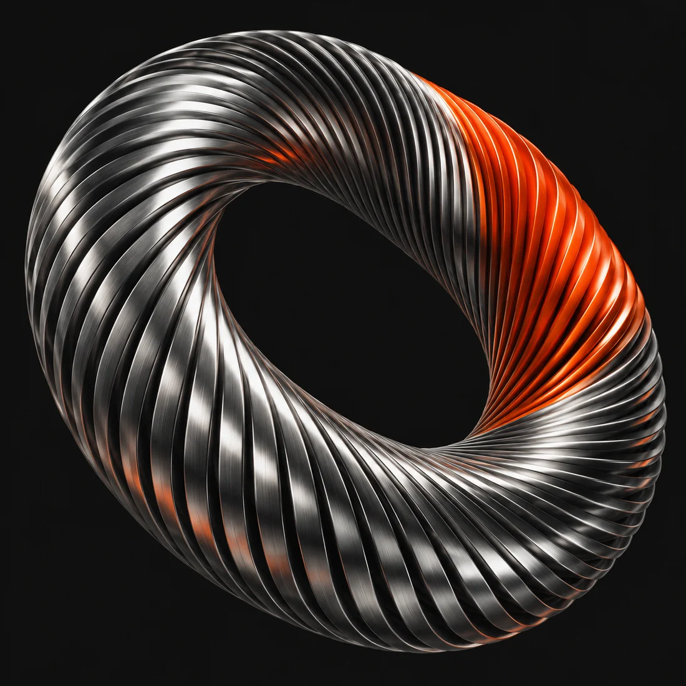
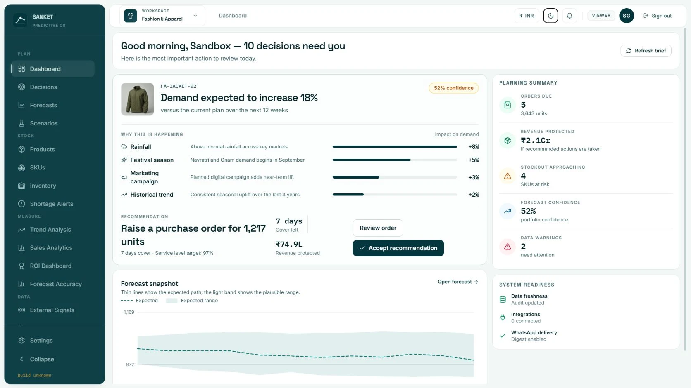
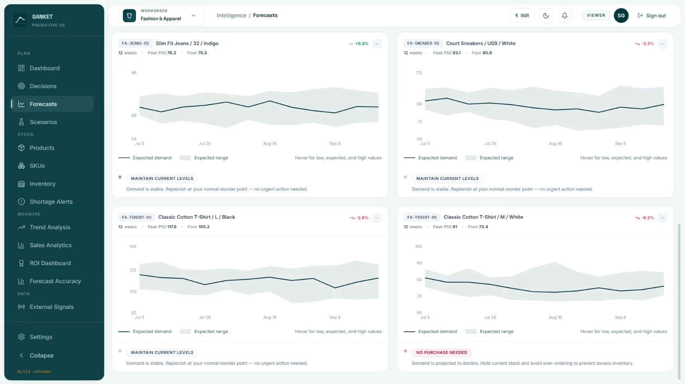
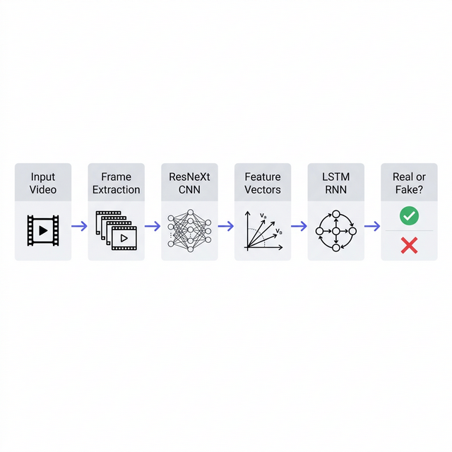
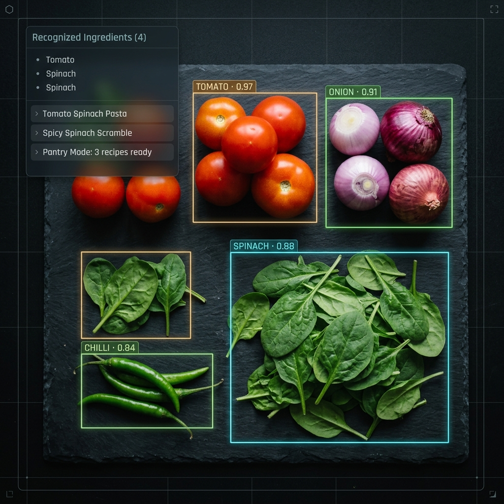

02 / Desktop betaRead story

Axon AI Studio
AI workspace / Desktop & 3DA local-first desktop workspace that brings specialist AI roles, a 3D campus and reviewable code changes into one place.
Hello, I’m Baltej.
Founder & CEO of Sanket. I build intelligent products for better business decisions — bringing data, AI and engineering into the work that matters.

Business instinct.
Engineering depth. Design sensibility.
Less guesswork.
Better decisions.
Running a business means making decisions before you have all the answers. What will sell? What should you stock? Where is the risk?
I’m building Sanket to turn demand, inventory and operational data into a clearer next move — bringing forecasting, machine learning and product design into one system.

Inside SanketProducts I’m building, from an AI office to personal data and event discovery. Explore the interface, then the decisions behind it.
A local-first desktop workspace that brings specialist AI roles, a 3D campus and reviewable code changes into one place.

Apple Health imports and a food diary, with reviewable records, visible gaps and consent-based access for AI assistants.

An event-ticket marketplace experience built around discovery, location and a direct path from interest to an event.

The business I’m building: demand forecasting and inventory intelligence, designed around the decisions a team has to make.
A verification prototype for agricultural supply chains. Claims link to signed evidence, batch transformations preserve provenance, and Merkle roots anchor records to an EVM chain. The architecture distinguishes record integrity from proof of physical origin.
TypeScript · Next.js · NestJS · PostgreSQL · Solidity
Explore the repository ↗A prototype for browser automation across simulated legacy banking interfaces. An append-only ledger, prechecks and reconciliation make ambiguous actions inspectable before an operator proceeds.
Python · FastAPI · Playwright · SQLite
View repository ↗A ResNeXt CNN extracts frame-level features and an LSTM classifies manipulated video. Evaluated on FaceForensics++, DFDC and Celeb-DF.
Python · PyTorch · ResNeXt · LSTM

Recipes that start with what’s already in your kitchen. A computer vision engine identifies fruits and vegetables from an uploaded image, then builds recipes around those ingredients.
Python · Computer vision

Connecting the dots
I move between business, engineering and design because the best solution rarely lives in just one discipline.
The full professional picture ↗Finding useful patterns and making them understandable. From exploratory analysis and reporting to forecasting and machine learning pipelines.
Python · SQL · PyTorch · XGBoost · Data visualizationTurning an idea into a working system. Interfaces, APIs, databases, agentic workflows and the infrastructure that connects them.
TypeScript · React · Node.js · FastAPI · Electron · MCPGiving complexity a clear shape. Product design, information architecture and thoughtful interfaces that help people get things done.
UI/UX · Figma · Design systems · Interaction designStarting with the problem worth solving. Balancing product direction, operational reality and technical decisions as the founder of Sanket.
Product strategy · Systems thinking · EntrepreneurshipBuilding a business and working with teams. Each role adds something to how I think, make and solve.
Building a predictive intelligence business at the intersection of operational data, machine learning and product design.
Building nowIndustry experience in data analysis, with a focus on turning business information into practical insights.
IndustryDeveloping and deploying machine learning pipelines and intelligent applications for real-world client work.
EngineeringCreating intuitive product experiences across platforms, from information architecture to the details of an interface.
DesignTeaching 500+ students data cleaning, visualization, statistical analysis and computer science fundamentals.
Teaching
B.Tech · Computer Science & Engineering
B V Raju
Institute of Technology, Narsapur
Founder by choice. Builder by instinct.
I care about how a business works, how a system is built, and how a product feels in someone’s hands.
I’m Baltej, a founder and working professional based in Hyderabad. My path connects data analysis, AI/ML engineering and product design. Today, I’m bringing those perspectives together through Sanket.
Teaching computer science to more than 500 students shaped how I approach complexity: understand it deeply, explain it clearly, and make it useful. That philosophy follows me into everything I build.
Good work starts with a better question.
I’m always
looking for the next one.
A business idea, a technical challenge,
or an interesting
conversation. I’m listening.